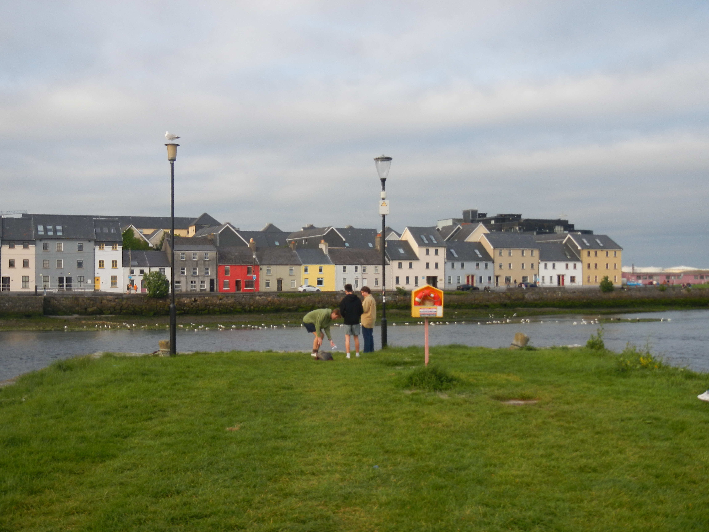

Galway
Galway is a smaller city on the west coast of Ireland, but it is still bustling with plenty of pubs and shops. The city is known for its rich culture and great traditional Irish live music. I only had one day to explore the city, so I would love to go back and do more; here are some things I was able to explore in my short time there!


Scenery: The Long Walk
What is known as 'The Long Walk' is one of the most famous and picturesque corners of Galway with its line of colorful houses along the harbour. Crossing over the bridge to the west end of the city, you can see these homes from across the water. You can also see the Spanish Arch next to the line of homes, but it really isn't much more than a stone structure. Funnily enough, the long walk is not very long long at all as it is only 314 meters long. However, if you want to extend your stroll, I recommend as its right near by the line of houses. In the future, I would love to also check out


Markets
Every Saturday and Sunday, Galway has a food and crafrt market all year long with vendors set up on Church lane and in Eyre Square. I ended up getting lunch here, enjoying a classic Irish sausage with caramelized onions. I also tried a green juice from another vendor which was delicious and refreshing. I would definitely recommend stopping by to shop around for a while and wither grab coffee and a pasrty or some lunch.